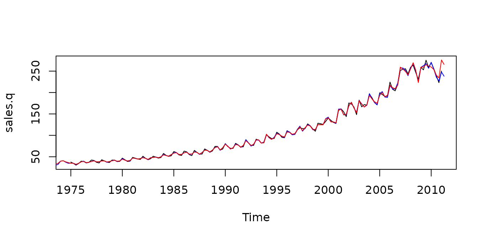

This is a short introduction to tempdisagg. Our article on temporal disaggregation of time series () in the R-Journal describes the package and the theory of temporal disaggregation in more detail.
For citation, please see citation("tempdisagg").
Disaggregating annual data to quarterly
Suppose we have an annual series and want to create quarterly values that sum up to the annual values. Let us explore the annual sales of the pharmaceutical and chemical industry in Switzerland, from which we want to create a quarterly series.
library(tempdisagg)
data(swisspharma)
plot(sales.a)No indicator
The most simple method is denton-cholette without an
indicator. It performs a simple interpolation that meets the temporal
additivity constraint. In R, this can be done the following way:
m1 <- td(sales.a ~ 1, to = "quarterly", method = "denton-cholette")td() produces an object of class "td". The
formula, 'sales.a ~ 1', indicates that our low frequency
variable will be disaggregated with a constant. The resulting quarterly
values of sales can be extracted with the predict()
function:
predict(m1)As there is no additional information on quarterly movements, the resulting series is very smooth:
Using additional information
While this purely mathematical approach is easy to perform and does not need any other data series, the economic value of the resulting series may be limited. There might be a related quarterly series that follows a similar movement than sales. For example, we may use quarterly exports of pharmaceutical and chemical products:
plot(exports.q)
m2 <- td(sales.a ~ 0 + exports.q, method = "denton-cholette")Because we cannot use more than one indicator with the
denton-cholette or denton method, the
intercept must be specified as missing in the formula
(~ 0). Contrary to the first example, the to
argument is redundant, because the destination frequency can be
interfered from the time series properties of
exports.q.
The resulting model leads to a much more interesting series:
As the indicator series is longer than the annual series, there is an extrapolation period, in which the quarterly sales are forecasted.
With an indicator, the denton-cholette method simply
transfers the movement of the indicator to the resulting series. Even if
in fact there were no correlation between the two series, there would be
a strong similarity between the indicator and the resulting series.
Regression based disaggregation
In contrast, regression based methods transfer the movement only if the indicator series and the resulting series are actually correlated on the annual level. For example, a Chow-Lin regression of the same problem as above can be performed the following way:
m3 <- td(sales.a ~ exports.q)As chow-lin-maxlog is the default method, it does not
need to be specified. Like with the corresponding lm
method, summary() produces an overview of the
regression:
summary(m3)
#>
#> Call:
#> td(formula = sales.a ~ exports.q)
#>
#> Residuals:
#> Min 1Q Median 3Q Max
#> -77.892 -7.711 -4.628 9.647 36.448
#>
#> Coefficients:
#> Estimate Std. Error t value Pr(>|t|)
#> (Intercept) 1.241e+01 1.493e+00 8.311 1.06e-09 ***
#> exports.q 1.339e-02 1.672e-04 80.111 < 2e-16 ***
#> ---
#> Signif. codes: 0 '***' 0.001 '**' 0.01 '*' 0.05 '.' 0.1 ' ' 1
#>
#> 'chow-lin-maxlog' disaggregation with 'sum' conversion
#> 36 low-freq. obs. converted to 158 high-freq. obs.
#> Adjusted R-squared: 0.9946 AR1-Parameter: 0 (truncated)There is indeed a strong correlation between exports and sales, as it
has been assumed in the example above. The coefficient of
exports.q is highly significant, and the very high adjusted
R-squared points to a strong relationship between the two variables. The
coefficients are the result of a GLS regression between the annual
series.
The estimation of the AR1 parameter, rho, was estimated to be negative; in order to avoid the undesirable side-effects of a negative rho, it has been truncated to 0. This feature can be turned off:
td(sales.a ~ exports.q, truncated.rho = -1)
#>
#> Call:
#> td(formula = sales.a ~ exports.q, truncated.rho = -1)
#>
#> Coefficients:
#> (Intercept) exports.q
#> 12.31579 0.01341
#>
#> Use summary() for details.
#> Use predict() to extract the final series.
#>
#> Use ?td to see the help file.Again, we can extract the resulting quarterly series of sales:
Like all regression based methods, chow-lin-maxlog can
also be used with more than one indicator series (imports.q
is only significant on a 10% level in the following example, it probably
will not help to produce a more accurate temporal disaggregation):
m4 <- td(formula = sales.a ~ exports.q + imports.q)
summary(m4)
#>
#> Call:
#> td(formula = sales.a ~ exports.q + imports.q)
#>
#> Residuals:
#> Min 1Q Median 3Q Max
#> -61.648 -7.139 -2.825 5.508 53.373
#>
#> Coefficients:
#> Estimate Std. Error t value Pr(>|t|)
#> (Intercept) 11.685855 1.493077 7.827 5.08e-09 ***
#> exports.q 0.011258 0.001158 9.723 3.26e-11 ***
#> imports.q 0.003934 0.002113 1.862 0.0716 .
#> ---
#> Signif. codes: 0 '***' 0.001 '**' 0.01 '*' 0.05 '.' 0.1 ' ' 1
#>
#> 'chow-lin-maxlog' disaggregation with 'sum' conversion
#> 36 low-freq. obs. converted to 158 high-freq. obs.
#> Adjusted R-squared: 0.9949 AR1-Parameter: 0 (truncated)Comparison of methods
In our example, we actually know the true data on quarterly sales, so we can compare the artificial values to the true values:
plot(sales.q)
lines(predict(m2), col = "blue") # Denton-Cholette
lines(predict(m3), col = "red") # Chow-Lin
With an indicator series, both the Denton method and Chow-Lin produce a series that is close to the true series. This is, of course, due to fact that in this example, exports are a good indicator for sales. If the indicator is less close to the series of interest, the resulting series will be less close to the true series.